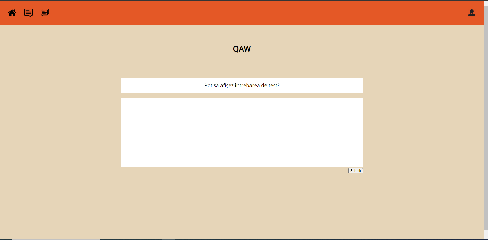

Nume proiect: Q&A
Tip proiect: B
Membrii echipa: Stativa Vladut-Alexandru si Ghiorghe Andrei-Alexandru
Ca si arhitectura, site-ul este destul de simplu avand o pagina principala unde sunt afisate niste intrebari,
in stanga carora se afla un filtru pentru cautarea acestora bazat pe categorii si taguri (si de asemenea existenta
unei bare de cautare).
Dupa care deasupra exista o bara de navigare, in dreapta careia se afla un buton care duce catre pagina de profil.
In pagina de profil ai acces la datele personale ale contului(nume, email, numar de telefon, badge-urile obtinute, interese)
Tot de la pagina principala dand click pe o intrebare oarecare ajungem la pagina unei intrebari unde poti vedea intrebarea si comentariile
acesteia. Atat intrebarile, cat si comentariile vor avea un sistem de "karma" asemanator celui de pe Reddit, astfel ca karma negativa a unei intrebari/unui comentariu
ar putea fi un motiv pentru admin sau pentru anumiti utilizatori sa o voteze spre stergere.
Dupa dand click pe raspunde la intrebare ajungem la pagina de adaugare a unui comentariu unde pur si simplu vezi la ce intrebare raspunzi si un camp unde sa completezi raspunsul.
Pe pagina de admin, adminul va putea vizualiza rapoarte privind diverse activitati dintr-un interval orar (cum ar fi punerea de intrebari, raspunderea la ele etc.)
Acesta (adminul) va avea posibilitatea de a sterge intrebari/comentarii, de a adauga categorii noi, badge-uri noi.
Utilizatorii vor putea adauga taguri noi, dar acestea "nu vor intra in sistem" decat dupa review-ul adminului si tot el va evalua reporturile puse anumitor
intrebari si raspunsuri.
O chestie de mentionat este faptul ca atat intrebarile si raspunsurile pot fi puse de persoane anonime (adica fara cont sau nelogate). Ca si solutie pentru acest lucru
ne-am gandit la crearea unui cont anonim de pe care lumea poate lasa intrebari si comentari fara a fi conectate pe contul lor, doar ca acest tip de cont nu va avea atasat de acesta
informatii personale.
Toate informatiile legate de utilizatori, intrebarile si raspunsurile lasate de acestia, toate acestea vor fi stocate intr-o baza de date, asemanatoare cu ceea din imaginea de ma jos